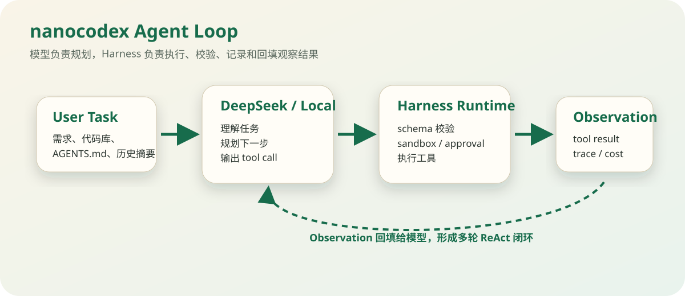
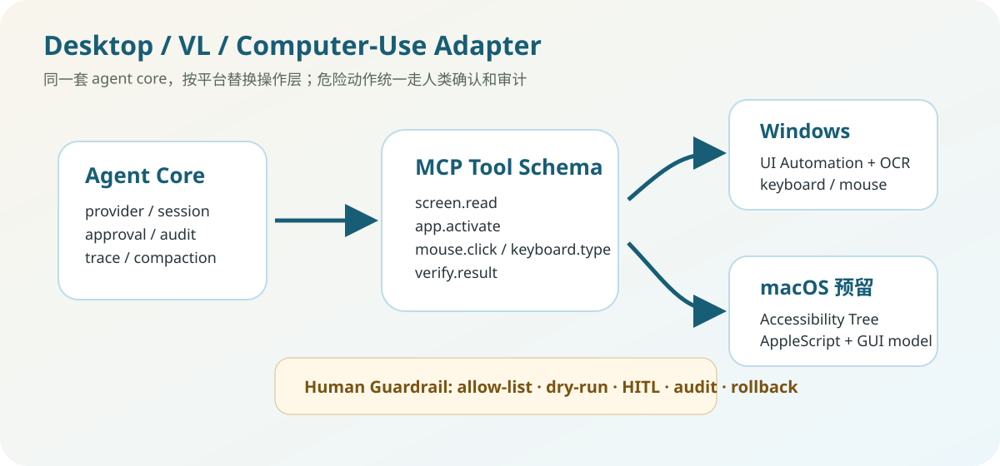

把模型接成一个可控的编码代理，而不是一个会写代码的聊天框
nanocodex 的设计目标是复刻 Codex-style coding agent 的核心工程能力：模型负责理解、规划和生成工具调用，harness 负责执行、校验、记录、压缩上下文和控制风险。它针对 DeepSeek / OpenAI 兼容模型做了工具协议、流式响应、reasoning effort、长会话压缩和成本统计等兼容处理，同时补了 Windows 桌面版、VL/多模态输入、MCP 工具接入和 Windows Computer-Use 能力。
一、项目定位
一句话：模型动脑，harness 动手；能确定的交给代码，不确定的交给模型，但所有动作都要被工具契约和安全边界约束。
解决什么问题
- 普通聊天模型只能“建议改代码”，不能稳定地读文件、改文件、跑测试、看错误、继续修复。
- 真实 coding agent 需要工具调用循环、会话记录、上下文压缩、MCP 接入、权限控制、桌面入口和失败恢复。
- DeepSeek / 本地模型在工具协议、reasoning 字段、流式响应、长上下文稳定性上有差异，需要兼容层和工程兜底。
- 普通 coding agent 主要操作代码仓库；进一步往前走，需要支持 VL 看图、读屏、操作 Windows 桌面，把模型能力接到真实电脑环境。
为什么适合 DeepSeek 岗位讲
- 它不是“调 API demo”，而是围绕模型工具调用构建完整 runtime。
- 能讨论模型能力边界、tool schema、repair loop、session compaction、MCP、安全审批、VL 多模态和桌面自动化。
- 能体现把 LLM 变成生产工具时的工程判断：可观测、可回滚、可测试。
二、核心运行链路

user task -> build system prompt + memory + workspace rules -> model proposes tool call -> sandbox / approval checks -> execute file/shell/MCP action -> append tool result to session -> model observes result and continues
三、模块设计
Model Layer
DeepSeek hosted API、本地 vLLM、llama-server、LM Studio、VL 模型。
providerstreamingreasoningAgent Core
loop、session、tool contract、compaction、repair、cost accounting。
ReActJSONLtraceAction Layer
文件修改、shell、MCP、skills、Windows GUI、Computer-Use adapter。
sandboxapprovalMCPAgent Loop
最小闭环保持可读：call model -> run tools -> append observation -> repeat。复杂能力不塞进 loop，而是做成独立模块，便于测试和替换。
agent/loop.pysession.pyprovider/base.pyTool Contract
工具以 schema 暴露给模型，harness 负责参数校验、错误结构化、工具结果回填。模型只提出“要做什么”，不能绕过工具边界。
apply_patchshellread_filemcp__*Sandbox & Approval
把读、写、网络、危险命令放进明确状态机。这样 coding agent 能自动做低风险动作，高风险动作必须审批或 dry-run。
read-onlyworkspace-writedanger-full-accessContext Compaction
长会话不是无限塞上下文，而是把历史压成任务摘要、已做决策、失败方案和下一步。压缩不是为了省 token，而是为了保持任务连续性。
deterministic digestmodel summarizerMCP & Skills
MCP 解决外部工具标准化接入，skills 解决“能力说明”和“能力正文”分离：平时只注入 name/description，需要时再加载正文。
mcp.tomlskills_storemarketplaceObservability
每次模型调用、工具调用、审批、失败、成本都写入会话记录。出错后能通过 trace 回看“模型想做什么、工具做了什么、为什么失败”。
JSONLcost accountingsession resume四、DeepSeek / 本地模型优化点
- OpenAI-compatible 接入：统一走
/v1/chat/completions，便于 DeepSeek hosted API、本地 vLLM、llama-server、LM Studio 切换。 - DeepSeek reasoning 兼容：对 reasoning effort、reasoning_content / reasoning 字段、thinking 模型工具调用上下文做兼容，避免多轮工具调用时历史消息缺关键 reasoning 信息。
- 工具协议 repair：对“文本里说要调用工具但没给 structured tool_use”、参数 JSON 不完整、tool_choice 不兼容等情况做修复或降级，而不是让会话直接断。
- 流式超时：为 Windows / 代理 / 本地服务卡住场景加入 response-open timeout 和 idle timeout，避免桌面版一直假死。
- reasoning effort 自动化：根据任务复杂度自动选择低/高/最大推理强度，减少简单任务过度思考，也避免复杂任务思考不足。
- 缓存与成本统计：按真实 token usage 和 DeepSeek cache hit/miss 价格记录成本，便于比较 hosted 与本地模型的性价比。
五、桌面版、VL 与 Windows Computer-Use

Windows 桌面版
除了 CLI，nanocodex 还做了 Tkinter GUI：会话列表、工具调用、MCP、skills、成本统计、测试状态都可以可视化查看。这个设计是为了让 coding agent 不只停留在命令行，而是能作为 Windows 桌面工作台使用。
Tkinter GUIsessionstool traceVL / 多模态输入
支持把图片作为 OpenAI multimodal image block 输入给模型，用于截图理解、界面分析、视觉资料转结构化任务。后续可以接 DeepSeek-VL / Qwen-VL / OpenAI-compatible VL 模型。
image inputscreenshot reasoningVL model seamWindows Computer-Use MCP
通过 MCP 接入 Windows 桌面自动化能力，把窗口定位、热键、鼠标键盘、OCR 读屏、操作结果校验封装成工具。模型只生成意图和参数，真实操作由 MCP server 执行。
MCP serverOCRkeyboard / mouse风险控制
桌面操作比改代码更危险，所以设计上保留 allow-list、dry-run、人类确认、审计日志和执行后校验。高风险动作不能让模型直接“乱点”。
allow-listHITLaudit六、技术选型演变与 macOS 预留
阶段 1：DeepSeek CLI 最小闭环
先验证模型能否理解编码任务，再逐步加入工具调用。这个阶段重点不是功能多，而是跑通 provider、prompt、session 和 streaming。
DeepSeek APICLIstreaming阶段 2：Coding Agent Runtime
发现“会回答”不等于“会做事”，于是加入 read_file、apply_patch、shell、tool result 回填和多轮 ReAct 循环。
tool callingReAct looppatch阶段 3：生产化边界
真实任务里最容易出问题的是安全、上下文和恢复，所以补 sandbox、approval、JSONL trace、context compaction、成本统计和 repair loop。
sandboxtracecompaction阶段 4：桌面与多模态
从 CLI 扩展到 Windows GUI、MCP、VL 图片输入和 Windows Computer-Use。下一步如果做 macOS，会优先复用同一套 computer-use tool contract。
Desktop GUIVLComputer-UsemacOS Computer-Use 预留路线
macOS 版本不会重写 agent loop，而是复用 nanocodex 的 provider、tool contract、session、approval 和 audit，把操作层替换成 macOS adapter。思路是：优先走 macOS Accessibility Tree / AppleScript / Shortcuts / shell 做确定性控制；遇到复杂 UI 再用视觉模型做元素定位，例如 ShowUI-2B / UI-TARS / OmniParser 这类屏幕解析或 GUI grounding 模型；最后仍然通过 MCP 暴露为 screen.read、app.activate、mouse.click、keyboard.type、verify.result 等工具。
nanocodex core
-> same model/provider/session/approval/audit
-> platform adapter
Windows: UI Automation + OCR + keyboard/mouse
macOS: Accessibility Tree + AppleScript/Shortcuts + local GUI model
-> MCP tool schema
-> human confirmation for risky actions
Related references: trycua/cua computer-use infrastructure, ShowLab Computer Use OOTB with local GUI models, Ghost OS macOS MCP using accessibility tree plus ShowUI-2B, Microsoft OmniParser for screen parsing.
七、论文思想映射
ReAct：推理与行动交替
nanocodex 的主循环就是“模型思考/选择动作 -> 工具执行 -> 观察结果 -> 继续推理”。这对应 ReAct 提出的 reasoning + acting 交替范式。
Reference: ReAct: Synergizing Reasoning and Acting in Language Models
Toolformer：模型学会何时用工具
工具不是外挂按钮，而是模型解决问题的一部分。nanocodex 通过 schema 告诉模型可用工具，并用 harness 限制工具的真实边界。
Reference: Toolformer: Language Models Can Teach Themselves to Use Tools
Reflexion：失败经验进入记忆
工具失败、测试失败、用户纠正都不是丢掉，而是可以进入会话摘要、memory 或回归测试，让下一轮策略更稳。
Reference: Reflexion: Language Agents with Verbal Reinforcement Learning
Voyager：技能库与长期积累
skills 系统借鉴“可复用技能”的思想，把常用工作流沉淀为可发现、可按需加载的能力单元。
Reference: Voyager: An Open-Ended Embodied Agent with Large Language Models
八、项目地址
GitHub: https://github.com/dgy-github/nanocodex
展示页: https://dgy-github.github.io/nanocodex/nanocodex.html